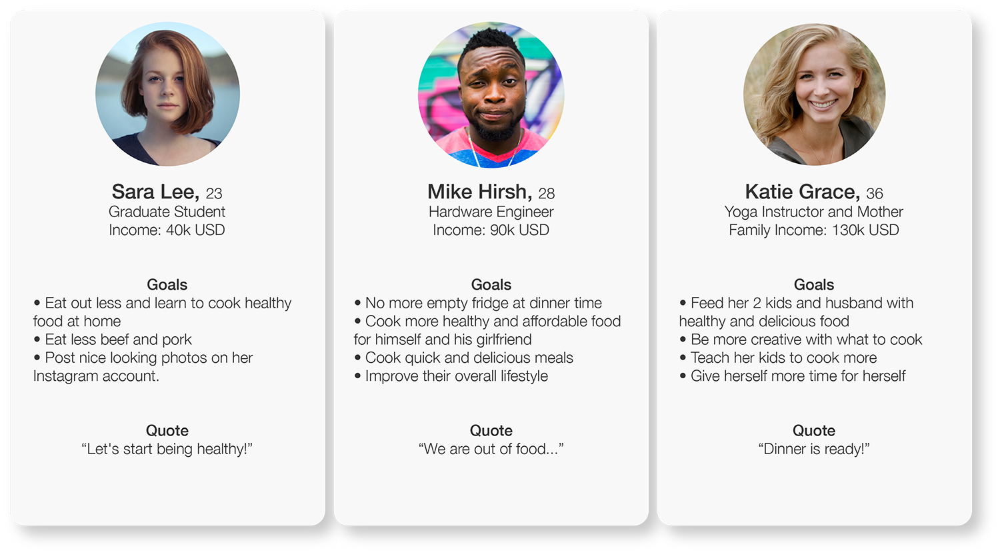

Pricing table
A project on redesigning the pricing table for an ingredient subscription company. The goal was to increase the conversion rate and gain more new sign ups.
☻ ☻ ☻
From my previous experience of designing pricing tables and the analytics I’ve set up on them, I learned the following:
- Pricing tables are where the % of drop off peaks
- Users always pause the longest on the pricing table
- It is where the users make decision whether to sign up or not
User Research
I know a few people who used to or are currently subscribed to this service. I asked them questions like why did you sign up for this particular company, or what attracted you about this particular company that the competitor brand didn't. Here is some key insights from the research:
Personalized
They love being able to choose their meals (Classic Plan). The experience of choosing menus to cook at home felt luxurious, and it was something for them to look forward to every week.
Affordable
It was cheaper than eating out. They also didn't have to worried about left over ingredients and wasting that.
Easy
They said good bye to last minute grocery shopping or starving from having no food in the fridge. The ingredients deliver at their door steps and recipes were also easy to follow.
Lifestyle
They can fit cooking healthy and delicious homemade meals into their busy lifestyle.
Personas
I did more research on the groups of users from social media platforms including Twitter and Instagram. Here's the 3 types of users that I came up with:

The personas table
Comparisons & Competitors
I looked at the user experience of a few other ingredient delivery services. I specifically analyzed their pricing pages and the register flows of each of them to identify things that would be helpful for the users. Here are some of them:
Explicit Price
Blue Apron and Plated have the total price right when users go to see the plans. Users know what to expect right away.
No Commitment
Plated lets their first time skeptical users know that they can change or cancel the plan easily and painlessly. Blue Apron and Plated also have their FAQs on their pricing page. Users don't have to leave the register page if they have questions.
Showing the Lifestyle
Blue Apron and Purple Carrot plan photos show people happily cooking in the kitchen. Letting the users imagine themselves happily cooking in the kitchen too.
Customizable
Home Chef let their users pick what food they want, what food they want to avoid, their dietary preference, and delivery date.

Other similar services
Sketch
With the users in mind, I started the redesign process with some sketches. This is probably the most important steps in my design process. This is where I decide which design to move forward with.
The main change that I decided to make was to combine the information of the “View Plan” page to be on the plan table page. This reduces the required steps for the users to see the information about all the plans.
Some of the wireframes sketches
Design
High Resolution mock-up helps me see the high level design and proportion better.
I like the existing card layout of the service because it's easy to see the comparison between the 3 plans. It also works well for responsive mobile view.
Details
The current look of the plan table is very clean. It might be too corporate and therefore doesn't convey the lifestyle that service provides.
Overall final design
Recap
The redesigned pricing table will encourage more new sign ups by..
- Providing them an easy way to compare plans and prices
- Resonating more with the potential customers and their desire life style
- Making the users feel like the meal is made just for them by showing them options
- Explicitly showing the honest, affordable price and exactly how much they will pay
- Showing users with specific diet restriction what the plan contains
- Providing them with a straight forward flow right through to the payment page
- - - - - - - - - - - - - - - - - - - - - - -